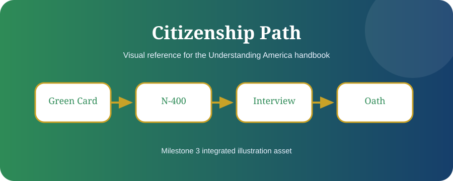

Reusable visual system
Core diagrams for history, Constitution, government, and citizenship.
These SVG assets are intentionally simple, scalable, and ready to be refined into final publication artwork.
Colonial Regions

Revolution Roadmap

Constitution Blueprint

Government Levels

Citizenship Path

Election Cycle M3

Illustration Backlog
| Category | Target Assets | Status |
|---|---|---|
| History | 13 Colonies, Revolution, Constitutional Convention, Civil War, Civil Rights | Started |
| Government | Congress, President, Courts, Agencies, Federalism | Started |
| Citizenship | N-400, Interview, Oath, Passport, Voting | Started |
| Reference | Amendments, Presidents, Supreme Court cases, Pennsylvania guide | Planned |